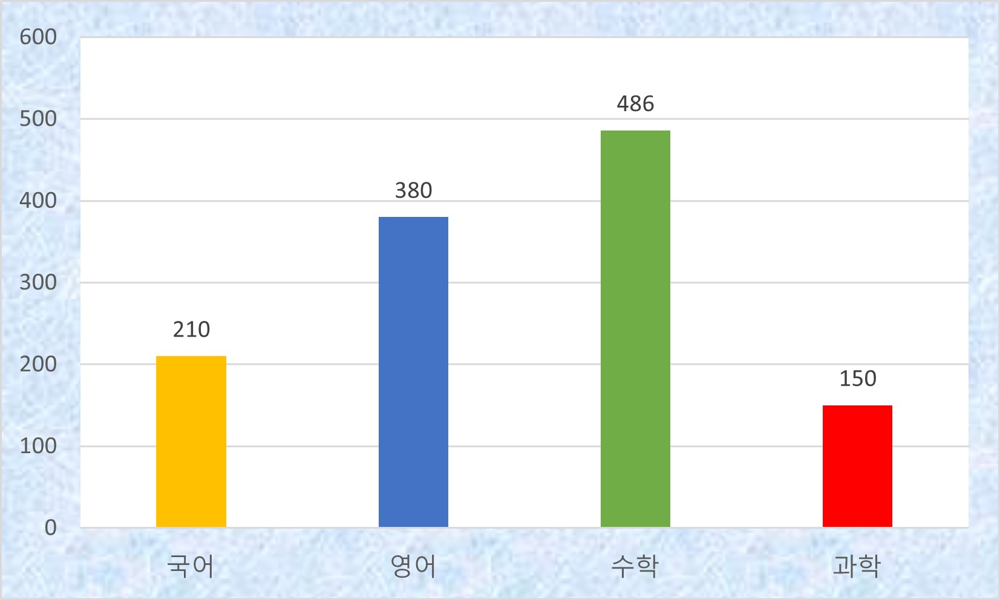

핵심 통계
고등학교 수
23 개교
일반·자사·특목고 전체
총 재학생 수
16,840 명
학교당 평균 732명
등록 학원 수
1,226개소
(예체능제외)
교과 보습·입시학원 기준
인프라 밀집도
5.41 %
학생 100명당 학원 비율
데이터 시각화
과목별 등록 학원 수 현황
수성구 내 주요 교과목별 학원 분포 수치 (단위: 개소)

학교당 학원 매칭 비율 (분석 요약)
수성구 고등학교 1개교당 평균 사교육 인프라 접근성
53.3 : 1
학교당 학원 비율
범어·만촌동 일대에 수·영 중심의 입시 학원가가 고밀도로 집중되어 있음이 도출됨.
✔ 수성구는 학교 1개당 평균 23.4개의 국어·영어·수학 학원이 분포하여 비교 지역 가운데 가장 높은 교육 인프라를 보였다.
✔ 달서구보다 약 55% 높은 학원 밀도를 나타냈으며, 북구와 비교하면 약 2배 수준의 학원 접근성을 확인할 수 있다.
✔ 이는 학생들의 사교육 선택 폭이 넓은 지역적 특성을 보여준다.
수성구 주요 고등학교 및 학원가 접근성
| 학교명 | 설립 구분 | 재학생 수 | 남/여 구분 | 학원가 접근성 등급 |
|---|---|---|---|---|
| 경신고등학교 | 사립 | 785명 | 남학교 | 최상 (매우 인접) |
| 정화여자고등학교 | 사립 | 820명 | 여학교 | 최상 (매우 인접) |
| 대륜고등학교 | 사립 | 812명 | 남학교 | 우수 (인접) |
| 수성고등학교 | 공립 | 497px | 공학 | 보통 |